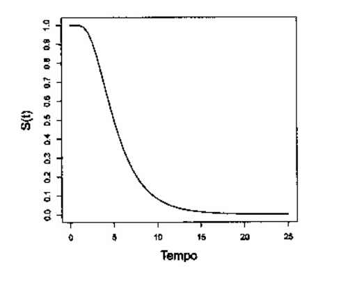
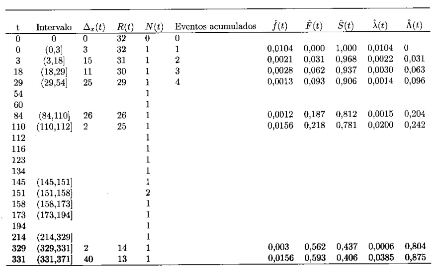

Exercícios do terceiro capítulo do livro “Análise de sobrevivência: teoria e aplicações em saúde”.
Esta parte inicial é dedicada ao carregamento de pacotes e definição de funções utilizadas posteriormente.
A figura a seguir mostra uma curva de sobrevivência. Com base nesta curva, identifique.

(a). A probabilidade de sobreviver por mais de 10 dias.
Observando a curva, o valor do $S(t)$ correspondente a $t = 10$ seria
$\approx 0.1$ .(b). A sobrevivência mediana e o tempo mediano de sobrevivência.
A sobrevivência mediana é o momento em que a função atinge 0.5, ou
$t \approx 6$.(c). O tempo em que 80% dos pacientes ainda estavam vivos.
Corresponde ao tempo em que $y = 0.8$, ou seja, $t \approx 4$.Sabendo-se que a probabilidade de sobreviver por mais de 100 dias após o transplante de coração é igual a 0.7, calcule:
(a). A probabilidade de sobreviver por, no máximo, 100 dias (inclusive).
Considerando que a probabilidade de sobreviver por mais de 100 dias
corresponde a função de sobrevivência $S(t) = 0.7$, sabemos que a
probabilidade de sobreviver até 100 dias é dada pela função
$F(t) = 1 - S(t)$. Ou seja, $F(t) = 0.3$.(b). O risco acumulado do óbito ocorrer em até 100 dias (ou seja, em no máximo 100 dias).
Sabemos que o risco acumulado $\Lambda$ de um evento ocorrer até o tempo $t$
pode ser estimado por $\Lambda = -\ln(S(t))$, ou seja 0.3567.(c). O risco acumulado do óbito ocorrer após 100 dias (ou seja, no mínimo em 100 dias).
O risco acumulado do óbito após o centésimo dia seria dado por
$\Lambda = -ln(F(t))$, ou seja: 1.204.A tabela a seguir mostra o tempo até o óbito de todos os pacientes de uma coorte de 32 indivíduos vivendo com Aids, não havendo tempos censurados. Complete as lacunas em branco na tabela usando as definições e relações entre as funções básicas de sobrevivência, onde T é o tempo até o óbito, R(t) é o número de pessoas sob risco no início do intervalo de tempo e N(t) é o número de óbitos ocorridos no intervalo de tempo.

# Inicializar o banco com os valores conhecidos
aids <- tibble(
t = c(0, 3, 18, 29, 54, 60, 84, 110, 112, 116, 123,
134, 145, 151, 158, 173, 194, 214, 329, 331, 371),
Rt = c(32:12),
Nt = c(rep(1, 13), 2, rep(1, 7))
)
# Calcular as outras variáveis a partir das funções
tabela <-
aids %>%
mutate(
inter = lead(cut(t, breaks = t)),
delta = lead(t, default = ) - t,
acum = cumsum(Nt),
ft = Nt / (Rt[1] * delta),
Ft = acum / Rt[1],
St = 1 - Ft,
lambda_t = Nt / (Rt * delta),
Lambda_t_discreta =
cumsum(lag(lambda_t, default = 0) * lag(delta, default = 0)),
Lambda_t_continua = ifelse(t == 0, 0, -log(lag(St)))
) %>%
filter(t != last(t))
names <- c("$t$", "$R(t)$", "$N(t)$", "Intervalo", "$\\Delta_x(t)$",
"Eventos Acumulados", "$\\hat{f}(t)$", "$\\hat{F}(t)$",
"$\\hat{S}(t)$", "$\\hat{\\lambda}(t)$", "$\\hat{\\Lambda}(t)$",
"${\\Lambda}(t)$")
knitr::kable(
tabela,
format = "markdown",
digits = 4,
col.names = names,
align = "c"
)| \(t\) | \(R(t)\) | \(N(t)\) | Intervalo | \(\Delta_x(t)\) | Eventos Acumulados | \(\hat{f}(t)\) | \(\hat{F}(t)\) | \(\hat{S}(t)\) | \(\hat{\lambda}(t)\) | \(\hat{\Lambda}(t)\) | \({\Lambda}(t)\) |
|---|---|---|---|---|---|---|---|---|---|---|---|
| 0 | 32 | 1 | (0,3] | 3 | 1 | 0.0104 | 0.0312 | 0.9688 | 0.0104 | 0.0000 | 0.0000 |
| 3 | 31 | 1 | (3,18] | 15 | 2 | 0.0021 | 0.0625 | 0.9375 | 0.0022 | 0.0312 | 0.0317 |
| 18 | 30 | 1 | (18,29] | 11 | 3 | 0.0028 | 0.0938 | 0.9062 | 0.0030 | 0.0635 | 0.0645 |
| 29 | 29 | 1 | (29,54] | 25 | 4 | 0.0012 | 0.1250 | 0.8750 | 0.0014 | 0.0968 | 0.0984 |
| 54 | 28 | 1 | (54,60] | 6 | 5 | 0.0052 | 0.1562 | 0.8438 | 0.0060 | 0.1313 | 0.1335 |
| 60 | 27 | 1 | (60,84] | 24 | 6 | 0.0013 | 0.1875 | 0.8125 | 0.0015 | 0.1670 | 0.1699 |
| 84 | 26 | 1 | (84,110] | 26 | 7 | 0.0012 | 0.2188 | 0.7812 | 0.0015 | 0.2041 | 0.2076 |
| 110 | 25 | 1 | (110,112] | 2 | 8 | 0.0156 | 0.2500 | 0.7500 | 0.0200 | 0.2425 | 0.2469 |
| 112 | 24 | 1 | (112,116] | 4 | 9 | 0.0078 | 0.2812 | 0.7188 | 0.0104 | 0.2825 | 0.2877 |
| 116 | 23 | 1 | (116,123] | 7 | 10 | 0.0045 | 0.3125 | 0.6875 | 0.0062 | 0.3242 | 0.3302 |
| 123 | 22 | 1 | (123,134] | 11 | 11 | 0.0028 | 0.3438 | 0.6562 | 0.0041 | 0.3677 | 0.3747 |
| 134 | 21 | 1 | (134,145] | 11 | 12 | 0.0028 | 0.3750 | 0.6250 | 0.0043 | 0.4131 | 0.4212 |
| 145 | 20 | 1 | (145,151] | 6 | 13 | 0.0052 | 0.4062 | 0.5938 | 0.0083 | 0.4608 | 0.4700 |
| 151 | 19 | 2 | (151,158] | 7 | 15 | 0.0089 | 0.4688 | 0.5312 | 0.0150 | 0.5108 | 0.5213 |
| 158 | 18 | 1 | (158,173] | 15 | 16 | 0.0021 | 0.5000 | 0.5000 | 0.0037 | 0.6160 | 0.6325 |
| 173 | 17 | 1 | (173,194] | 21 | 17 | 0.0015 | 0.5312 | 0.4688 | 0.0028 | 0.6716 | 0.6931 |
| 194 | 16 | 1 | (194,214] | 20 | 18 | 0.0016 | 0.5625 | 0.4375 | 0.0031 | 0.7304 | 0.7577 |
| 214 | 15 | 1 | (214,329] | 115 | 19 | 0.0003 | 0.5938 | 0.4062 | 0.0006 | 0.7929 | 0.8267 |
| 329 | 14 | 1 | (329,331] | 2 | 20 | 0.0156 | 0.6250 | 0.3750 | 0.0357 | 0.8596 | 0.9008 |
| 331 | 13 | 1 | (331,371] | 40 | 21 | 0.0008 | 0.6562 | 0.3438 | 0.0019 | 0.9310 | 0.9808 |
Lembrando que o evento é óbito em pacientes vivendo com Aids, e interpretando a tabela do exercício anterior, responda:
(a). Qual o tempo mediano de sobrevivência desta coorte?
- O tempo mediano de sobrevivência é o ponto onde a função de sobrevivência é 0.5, ou seja:
## # A tibble: 1 x 1
## t
## <dbl>
## 1 158(b). O que significa o valor atribuído a \(\hat{S}(214)\)?
- O valor atribuído a \(\hat{S}(214)\) é a probabilidade de sobreviver a um tempo superior a 214 unidades.
(c). O que significa o valor atribuído a \(\hat{F}(214)\)?
- Da forma análoga a anterior, é a probabilidade de sobreviver até 214 unidades de tempo.
(d). O que significa o valor atribuído a \(\hat{\lambda}(214)\)?
- Trata-se do risco de óbito após sobreviver 214 unidades de tempo.
(e). O que significa o valor atribuído a \(\hat{\Lambda}(214)\)?
- Trata-se do risco de óbito do paciente até as 214 unidades de tempo.